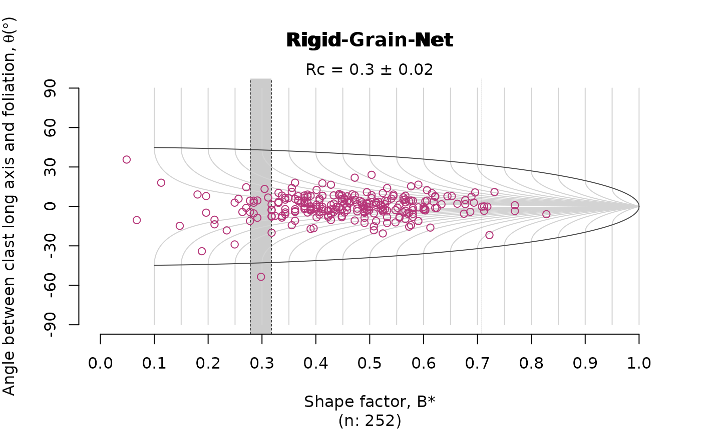

7. Strain and Vorticity Analysis
Tobias Stephan
2025-09-15
Source:vignettes/G_Strain_Analysis.Rmd
G_Strain_Analysis.RmdImport some R-phi data
data(ramsay)
head(ramsay)
#> R phi
#> [1,] 1.52 27.59
#> [2,] 1.33 36.91
#> [3,] 1.78 27.31
#> [4,] 1.51 17.73
#> [5,] 1.70 24.45
#> [6,] 1.39 45.84Calculate densities in Rf-Phi space:
out <- hypercontour(ramsay, angfmt = "deg", proj = 'rfp')Rf/phi plot
image(out$x, out$y, out$z, asp = ifelse(out$proj != 'rfp', 1, NA),
ylim = c(1, out$rmax),
xlab = bquote(varphi*' ('*degree*')'), ylab = bquote(R[f]),
main = out$proj,
col = viridis::viridis(50)
)
contour(out$x, out$y, out$z, add = TRUE, lwd = .5)
points(out$points, col = "grey", pch = 16, cex = .5)
Equidistant polar plot:
out2 <- hypercontour(ramsay, angfmt = "deg", proj = 'eqd')
# calculate some colors
levels <- pretty(range(out2$z, na.rm = TRUE), 20)
cols <- viridis::viridis(n = length(levels) - 1)
plot(out2$x, y = out2$y, 'n', xlab = NULL, ylab = NULL, asp = 1, axes = FALSE, ann = FALSE)
graphics::.filled.contour(out2$x, out2$y, out2$z, levels = levels, col = cols)
# points(out2$points, col = "grey", cex = .5)
lines( out2$frame, lwd = 2)
title(main = out2$proj)
Vorticity analysis
The rigid grain net after (Jessup et al. 2007) plots the distribution
the strain ratio (R) of orientation (phi) of
porphyroclast over the theoretical distribution of tailless clasts. The
plot estimates the critical threshold Rc marking the
transition between the stable-sink position and infinitely rotating
porphyroclasts. This threshold can be interpreted as the the
mean kinmatic vorticity number. Here the
Rc is estimated using the bootstrap method described in
Stephan et al. (2025).
ramsay_shift <- ramsay
ramsay_shift[, 2] <- tectonicr::circular_mean(ramsay[, 2]) - ramsay[, 2] # assuming the mean orientation resembles the foliation
RGN_plot(ramsay, col = 'darkred')